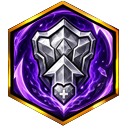
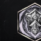
85 наблюдений · платный (1500 душ)
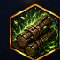
28 наблюденийA detachment of enemy warriors will appear at the camp site. After killing all the creatures that appear, you will receive 500 wood. ';.
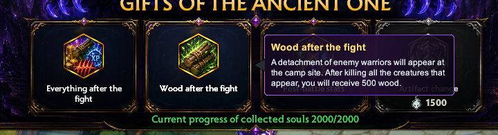

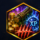
27 наблюденийA detachment of enemy warriors will appear at the camp site. After killing all the creatures that appear, you will receive.
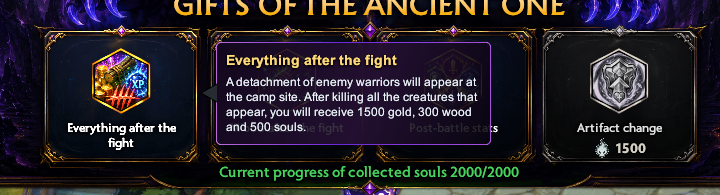

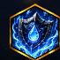
24 наблюденийPermanently gain +5 mana regeneration. For 60 seconds, restore an additional 60 mana per second and receive a 20% reduction in incoming damage.
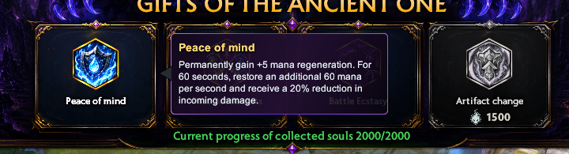

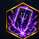
23 наблюденийAbsorb a random absorbable card. If there are no suitable cards, get 50 wood. beter ee cee ee epee Fa times oroeeg€;.
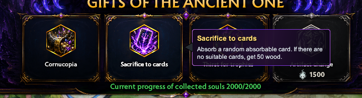

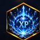
23 наблюденийA detachment of enemy warriors will appear at the camp site. After killing all the creatures that appear, you will receive 5000 experience.
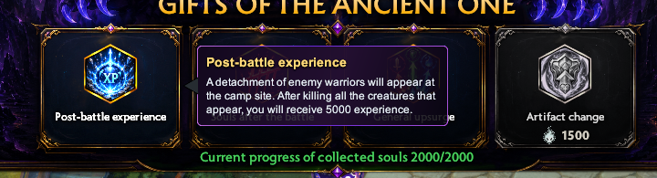

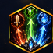
23 наблюденийAll stats are increased by 40%.
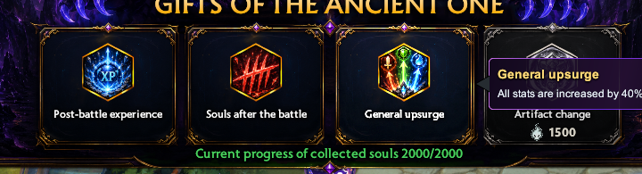

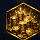
20 наблюденийA detachment of enemy warriors will appear at the camp site. After killing all the creatures that appear, you will receive 5000 gold.
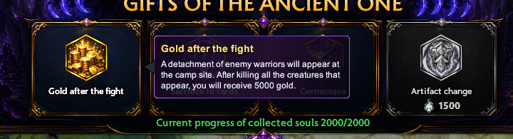

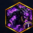
18 наблюденийGain +50% attack speed and: reduction for 60 seconds.
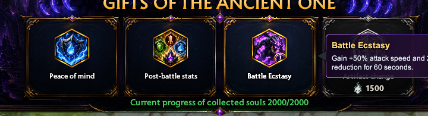

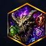
18 наблюденийFor 60 seconds, gain 0.2 to all monster you kill.
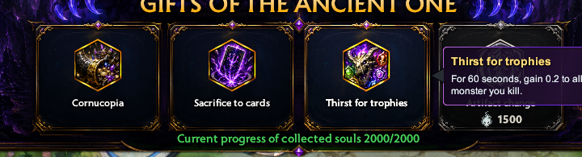

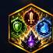
16 наблюденийA detachment of enemy warriors will appear at the camp site. After killing all the creatures that appear, you will receive +300 to all characteristics. e - @.
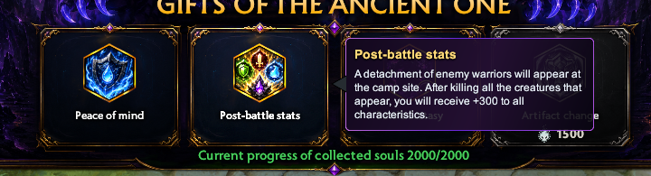

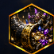
15 наблюденийGet 5 monster horns and with a 25% chance an additional 1 elite horn. -.
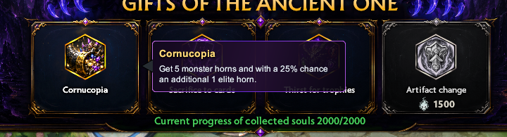

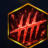
15 наблюденийA detachment of enemy warriors will appear at the camp site. After killing all the creatures that appear, you will receive 1000 souls. ‘;.
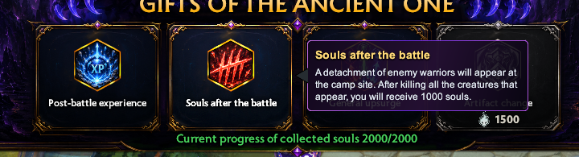

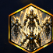
13 наблюденийSummon 5 warriors of the cele help in battle. They inherit 10C health and attack. -.
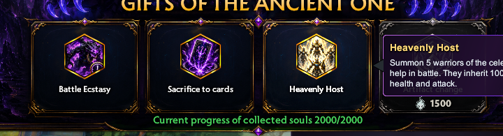